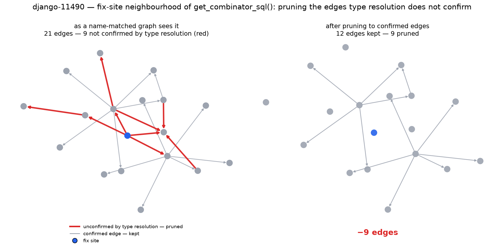

Every AI coding agent that reads your repository builds a graph of it first. Aider's repo map, RepoGraph and LocAgent all build that graph by matching identifier names. We built both arms of the same Django commit — one name-matched, one type-resolved — and measured the gap.
The demo runs entirely in your browser — no network, no server. Press Prune wrong edges.

The fix-site neighbourhood of get_combinator_sql() in
django__django-11490. The name-matched arm draws 21 edges; type
resolution confirms 12. Four of the nine red edges are one
collision — list.extend name-bound to a GIS class.
1. The substrate. Precision ceiling 0.746, recall 0.352
of the true graph, Jaccard 0.3143. A quarter of a name-matched graph's in-scope edges
do not survive type resolution, and they fail in a nameable way: list.extend bound to
a GIS class 139 times, str.lower to a template filter 125 times.
cursor block of 54 edges is exactly that case: real
self.connection.cursor() calls where the name-matched arm was right
and the type-resolved reference was incomplete. True precision is ≥ 0.746, never ≤.
2. The direction — unpublished elsewhere. Bounded at six hops, across 44 instances:
| Direction | Connected | Reading |
|---|---|---|
| fix → test (directed) | 0 / 44 (0%) | Code does not call tests. This direction was backwards all along. |
| test → fix (directed) | 24 / 44 (55%) | The clean semantic: the test's call chain reaches the change. |
| undirected | 43 / 44 (98%) | "Shares a neighbourhood" — not "the test exercises this code". |
The 55→98 gap is the pytest fixture, setUp and parametrize
closure that a static call graph structurally cannot see.
3. The engine. Counting bounded simple paths is #P-complete (Valiant 1979), and
it shows: on one 34,000-node graph at Django's real density, algo.MSpaths took
14,539 ms and timed out at the 30,000 ms ceiling from the busiest
source, while bounded reachability answered the same graph in
6.3–9.9 ms — exactly, verified against a NetworkX reference at every
hop count.
The friction predictor does not work. Best feature
test_to_fix_hops reaches AUC 0.518 against an f2p_count
baseline of 0.653; every bootstrap CI brackets zero; n=44 cannot resolve small
effects. That is the reported result.
Two earlier claims from this project are retracted: v1's AUC 0.565 (measured on a graph where 73.9% of resolved call edges were name-collision artifacts) and v2's 0.631 (path-multiplicity only, and it lost to patch size). Per-instance agent-failure prediction is already solved at AUC 0.841 (arXiv 2604.00594) — we do not claim it.
precision.md — the two-arm delta and the offender table · connectivity.md — the direction finding · latency.md — both queries on one graph · evaluation.md — the negative result and the retractions · graph-delta.md — the raw join
git clone https://github.com/areycruzer/substrate-friction
cd substrate-friction && ./setup.sh
friction check --issue django__django-11490